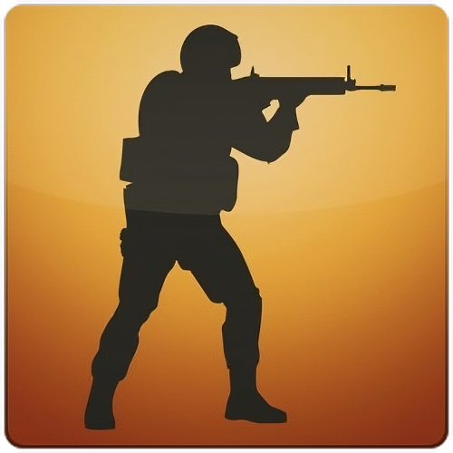
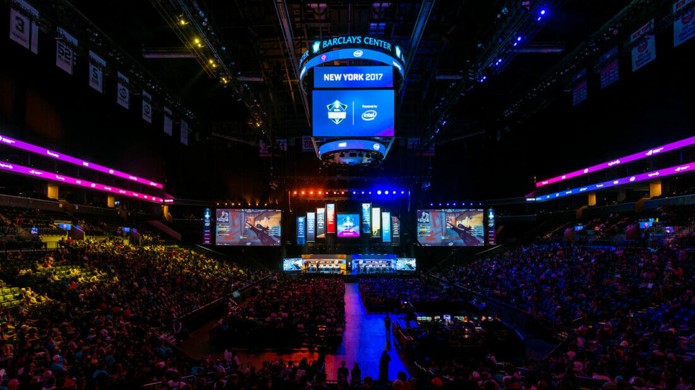

Counter Stirke - Pelit

Counter-Strike: Global Offensive (CS:GO)
CS:GO sai alkunsa yllättävästä suunnasta: se piti alun perin olla vain konsoliporttaus aiemmasta Counter-Strike: Source -pelistä.
Kehityksen aikana Valve ja Hidden Path Entertainment kuitenkin huomasivat, että heillä oli käsissään mahdollisuus luoda kokonaan uusi peli, joka yhdistäisi hajanaiset pelaajakunnat.
Kun peli julkaistiin elokuussa 2012, se sai alkuun ristiriitaisen vastaanoton, ja monet ammattilaispelaajat pysyivät vanhemmissa versioissa. Valve kuitenkin jatkoi pelin hiomista, ja vuonna 2013 julkaistu Arms Deal -päivitys,
joka toi mukanaan aseskinit, muutti pelin suunnan täysin. CS:GO kasvoi lopulta maailman suurimmaksi FPS-e-urheilulajiksi, jossa jaettiin vuosien varrella yli 88 miljoonaa dollaria palkintorahoina. Se säilytti asemansa Steamin
suosituimpana pelinä yli vuosikymmenen ajan.
CS:GO-eurheilun nousu ja kukoistus
Counter-Strike: Global Offensive ei ollut välitön hitti, mutta siitä tuli lopulta maailman seuratuin taktinen ammuntapeli. Pelin e-urheiluhistoria alkoi toden teolla vuonna 2013, kun Valve ilmoitti ensimmäisestä Major-turnauksesta, DreamHack Winteristä. Tuolloin 250 000 dollarin palkintopotti tuntui jättimäiseltä, ja ruotsalainen Fnatic nousi historian ensimmäiseksi Major-voittajaksi kaatamalla suosikkina pidetyn Ninjas in Pyjamasin (NiP).
NiP hallitsi pelin alkuvuosia suvereenisti 87 peräkkäisellä karttavoitollaan, mikä on edelleen yksi urheiluhistorian uskomattomimmista putkista. Myöhemmin valtikka siirtyi Brasiliaan Luminosityn ja SK Gamingin myötä, kunnes tanskalainen Astralis loi vuosina 2018–2019 dynastian, jota pidetään pelillisesti kaikkien aikojen täydellisimpänä. Astralis voitti ennätykselliset neljä Majoria, joista kolme tuli peräkkäin.
Yksilötasolla CS:GO loi legendoja, kuten ukrainalaisen s1mplen, joka rikkoi lähes kaikki tilastolliset ennätykset, ja ranskalaisen superlupauksen ZywOon. Pelin ympärille kasvoi massiivinen ekosysteemi, jossa IEM Katowice ja ESL One Cologne nousivat lajin "Wimbledoneiksi" – turnauksiksi, joiden voittaminen oli jokaisen pelaajan unelma.
Suomalaisittain merkittävin hetki koettiin vuonna 2019, kun ENCE nousi altavastaajana Katowicen Major-finaaliin asti, mikä nostatti Suomessa ennennäkemättömän CS-huuman. CS:GO:n e-urheiluaikakausi päättyi lopulta Pariisin Majoriin 2023, jolloin Team Vitality kruunattiin viimeiseksi mestariksi kotiyleisönsä edessä
